골드 수급처
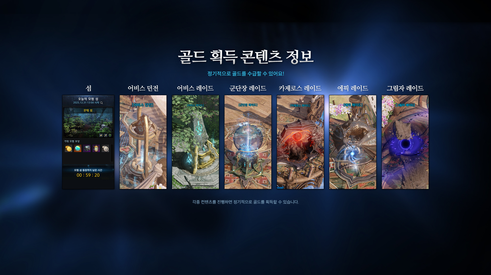
골드를 획득할 수 있는 콘텐츠들입니다.
엔드 콘텐츠
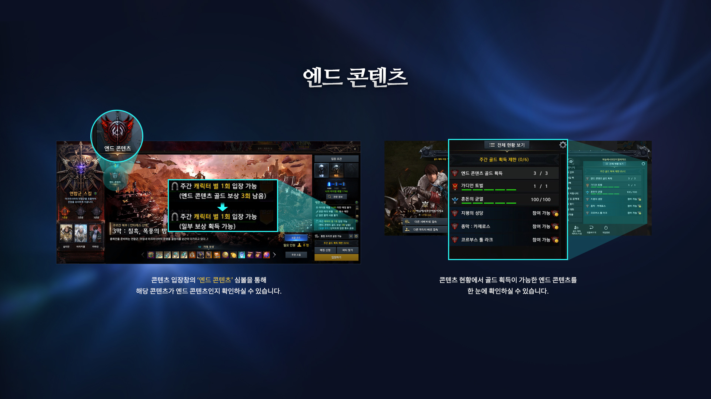
클리어 보상으로 골드를 주는 레이드입니다.
원정대당 6개의 캐릭터를 골드 획득 캐릭터로 지정 가능하며 골드 획득 캐릭터 이외의 캐릭터는 엔드 콘텐츠를 클리어해도 보상으로 골드를 받을 수 없습니다(6회 제한).
레이드 입장화면에서 관문 정보를 누르면 지급 되는 골드를 확인할 수 있습니다.
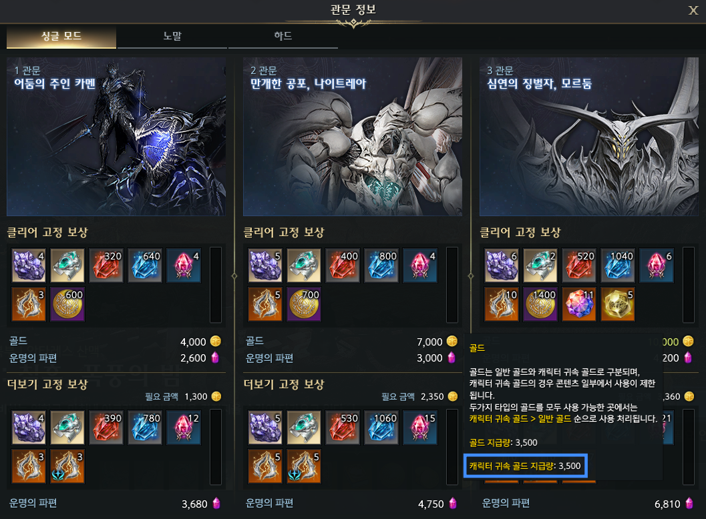
싱글 모드의 경우 일정 비율을 캐릭터 귀속 골드로 받습니다.
일일 숙제
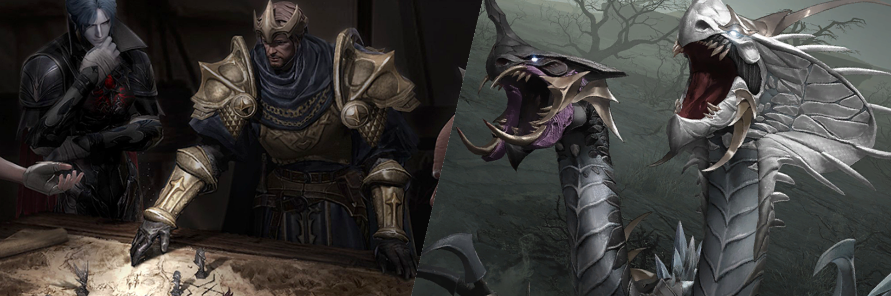
일일 숙제인 쿠르잔 전선과 가디언 토벌에서 나오는 재료들을 팔아 돈을 벌 수 있습니다.
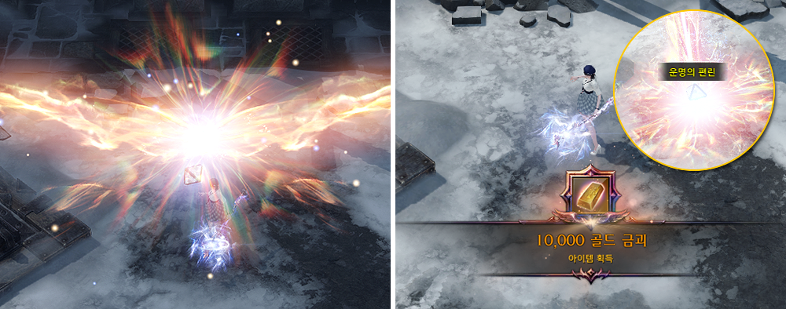
일일 콘텐츠에서는 낮은 확률로 편린이 나오는데 최대 30만골드까지 획득이 가능합니다.
아제나의 축복을 구매한 캐릭터의 경우 추가적으로 '축복의 편린'이 나오는데 축복의 편린에서 획득한 골드는 획득 시 원정대 귀속, 사용 시 캐릭터 귀속이 됩니다.
낮은 레벨의 캐릭터라도 동일하게 편린 보상이 나와서 저레벨 캐릭터에 아제나의 축복을 사주고 편린에서 나온 골드를 키우는 캐릭에 몰아주는 방식으로 사용할수도 있습니다.
큐브
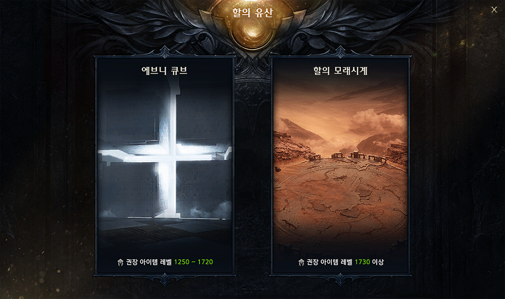
큐브/할의 모래시계는 쿠르잔 전선을 돌아 얻을 수 있는 입장권을 사용하여 입장 가능하며 클리어 보상으로 보석, 돌파석(귀속), 숨결(귀속), 각인서를 얻을 수 있습니다.
각인서의 경우 낮은 확률이지만 유효 유물 각인서가 나올 경우 상당한 골드를 벌 수 있습니다.
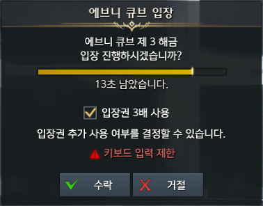
큐브는 입장권 3배 사용이 가능합니다. 보상이 3배로 나오지만 럭키나 메가럭키가 나올 확률이 3배가 되지는 않으니 잘 생각해서 사용합시다.
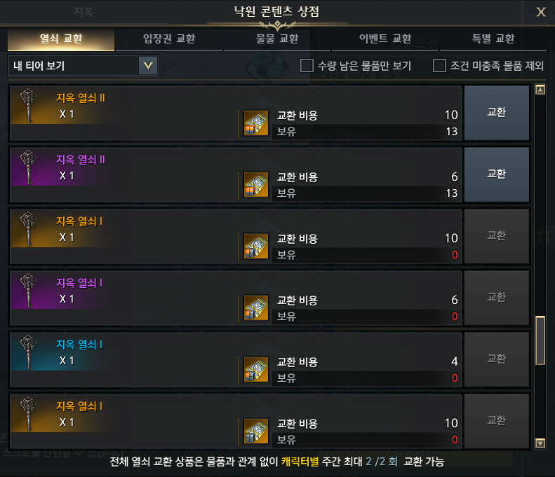
큐브 입장권은 지옥 열쇠로 교환이 가능한데 지옥에서 얻는 보상은 모두 귀속이라 판매하여 골드로 바꿀 수 없으니 골드가 필요한 경우에는 큐브를 도는게 좋습니다.
캘린더 콘텐츠
섬

모험섬 보상은 랜덤으로 정해지는데 골드가 보상으로 나오는 경우 참여해주시면 좋습니다.
카오스게이트

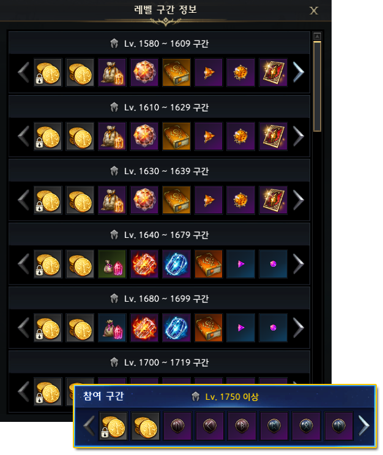
카오스게이트 보상으로 귀속 골드, 파편 주머니, 숨결, 각인서, 보석이 나오고 히든 관문 등장시 랜덤으로 거래 가능 골드를 보상으로 획득할 수 있습니다.
모든 보상이 거래 가능하고 유물 각인서를 획득할 확률이 높기 때문에 보상 획득기회가 남아있다면 반드시 참여하는게 좋습니다.
필드 보스

보상으로 보석, 각인서, 재련 재료를 얻을 수 있습니다. 경매로 각인서와 카드가 나오는데 비싼 각인서가 나올 경우 분배금으로 꽤 많은 골드가 들어옵니다.
카게와 마찬가지로 보상 획득기회가 남아 있다면 반드시 참여하는게 좋습니다.
태초의 섬

일종의 배틀로얄 장르의 미니게임으로 15위 달성 시 3레벨 보석 상자를 받을 수 있습니다.
고인물들이 많고 티밍유저들도 있으니 그냥 맘 편하게 보석만 노리고 15등만 하시는게 좋습니다.
생활
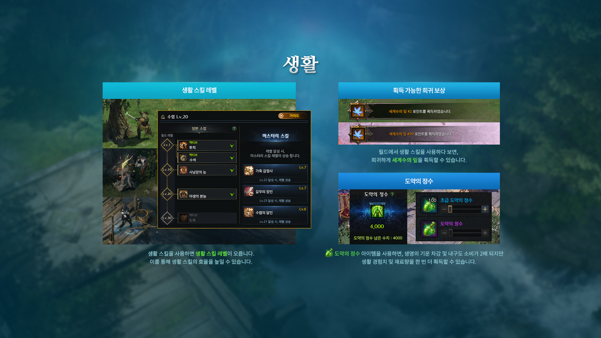
매일 충전되는 생명의 기운을 소모해 생활 재료를 얻을 수 있습니다. 뉴비들에게는 엔드 콘텐츠 획득 골드를 제외하면 가장 많은 골드를 벌 수 있는 방법입니다.
생활 레벨이 낮을땐 크게 벌린다는 생각이 안들수도 있지만 생활 레벨이 올라가고 높은 등급의 도구를 맞추면 주간 획득 골드가 상당하니 꾸준히 생활을 해줍시다.
길드 혈석 상점 교환
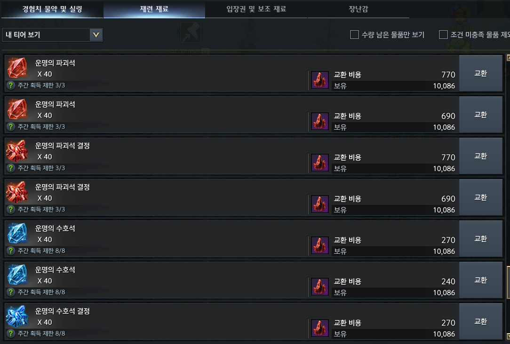
길드 활동을 통해 매주 실마엘 혈석을 획득하고 혈석 상점에서 필요한 물품을 교환할 수 있습니다.
파괴석 결정을 판매하거나 큐브 입장권을 구매해 큐브를 돌고 나온 보석을 판매해서 골드를 벌 수 있습니다.
길드 활동에 관심이 없더라도 혈석 길드나 1인 길드를 통해 혈석 상점을 이용하시는게 좋습니다.
림레이크 보석 교환
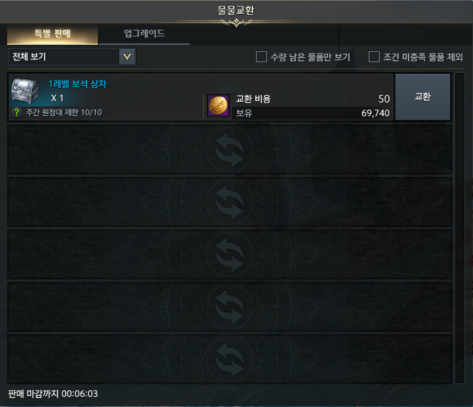
림레이크 항구 앞바다에서 매시 정각~15분 / 30분~45분 출현하는 텀벙게 어업 길드선에서 주마다 1레벨 보석 상자를 구매할 수 있습니다.
수집품
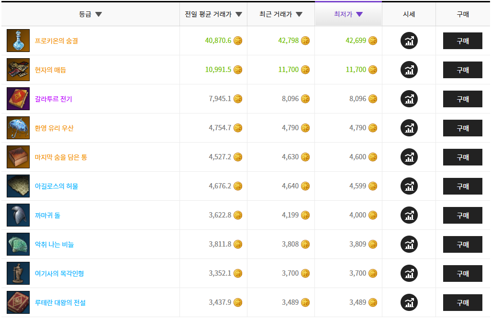
필드에서 사냥을 통해 모험의서 수집품을 획득해 판매하는 방법입니다. 별로 추천드리는 방법은 아닙니다.
프로키온의 숨결은 가격이 비싼데 비싼 이유가 다 있습니다. 가격이 비쌀수록 드랍률이 낮아서 이거 할 시간에 다른거 하는게 좋습니다.
신규 대륙이 나올 경우 해당 대륙의 수집품이 비싸기 때문에 이때는 수집품 노가다를 하셔도 괜찮습니다. 이때는 낮은 등급의 수집품도 가격이 비싸기 때문에 할만 합니다.
4인이 파티를 맺고 같이 하면 같은 화면에 있지 않아도 보상이 나오기 때문에 수집품 파티를 구해서 하시면 4배의 효율로 가능합니다.